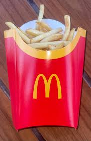

French Fries

French fries, also known as fries, chips (especially in the UK and Australia), or finger chips (Indian English), are deep-fried potato strips. Their exact origin is debated, with both Belgium and France claiming their invention.
Ingredients
- 2 kg starchy potatoes (like Russets or Idaho potatoes)
- ½ liter oil for deep frying (vegetable or peanut oil is recommended)
- 1 tbsp salt (or to taste)
Instructions
- Prepare the potatoes
- Blanch the potatoes (optional, but recommended for extra crispiness)
- First fry
- Second fry
- Season and serve
Home page